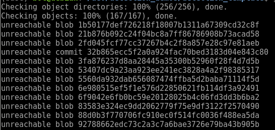
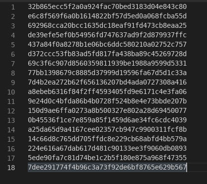

恢复git stash误删的内容
不小心使用 git drop stash 误删了暂存的内容 (或是 git stash pop 后丢失)，怎么恢复？
其实drop后并没有真正删除暂存的内容，而是移除了对它的引用，所以通过一些操作是可以找回的。
模拟误删场景
git st查看当前修改1
2
3
4
5
6
7
8
9
10
11
12
13On branch master
Your branch is up-to-date with 'origin/master'.
Changes not staged for commit:
(use "git add/rm <file>..." to update what will be committed)
(use "git checkout -- <file>..." to discard changes in working directory)
deleted: calibration/adjust_result.json
modified: calibration/config.json
modified: calibration/src/rd_test.cc
modified: pose_estimation/CMakeLists.txt
modified: test/CMakeLists.txt
modified: test/multiple_sensors.json
modified: test/src/test_multiple_sensors.ccgit stash暂存修改1
2Saved working directory and index state WIP on master: 4d74f8a fix spell
HEAD is now at 4d74f8a fix spellgit stash list查看暂存内容列表1
stash@{0}: WIP on master: 4d74f8a fix spell
git stash drop stash@{0}移除暂存内容1
Dropped refs/stash@{0} (0b45536f1ce7e859a85f1459d6ae34fc6cdc4039)
至此已经把暂存的修改内容移除了
恢复步骤
1. 查找unreachable的记录
1 | git fsck --unreachable |

可能会查找到几百条记录，截图了部分。这些记录有三种类型：blob、tree和commit。
blob：每个blob代表一个版本的文件，blob只包含文件的数据，而忽略文件的其他元数据，如名字、路径、格式等。tags tag用于给某个上述类型的对象指配一个便于开发者记忆的名字, 通常用于某次commit。
tree：每个tree代表了一个目录的信息，包含了此目录下的blobs，子目录，文件名、路径等元数据。因此，对于有子目录的目录，git相当于存储了嵌套的trees。
commit：每个commit记录了提交一个更新的所有元数据，如指向的tree，父commit，作者、提交者、提交日期、提交日志等。每次提交都指向一个tree对象，记录了当次提交时的目录信息。一个commit可以有多个父commits。
一般来说能用得上的是commit后跟的id，所以可以用 grep 过滤一下
1 | git fsck --unreachable | grep commit |
1 | Checking object directories: 100% (256/256), done. |
2. 查看修改内容
查看完整修改内容
1
git show 32b865ecc5f2a0a924fac70bed3183d04e843c80
1
2
3
4
5
6
7
8
9
10
11commit 32b865ecc5f2a0a924fac70bed3183d04e843c80
Author: Tiffany Zhou <xueying.zhou@dorabot.com>
Date: Wed Nov 3 17:33:13 2021 +0800
index on feature/depalletizing: aa9d706 update for dr_vision_lib
diff --git a/include/pcl_utils/tree.hh b/include/pcl_utils/tree.hh
index 11e46c1..ceb56be 100644
--- a/include/pcl_utils/tree.hh
+++ b/include/pcl_utils/tree.hh
@@ -11,7 +11,7 @@ template <typename PointT>查看修改文件
1
git show 32b865ecc5f2a0a924fac70bed3183d04e843c80 --stat
1
2
3
4
5
6
7Author: Tiffany Zhou <xueying.zhou@dorabot.com>
Date: Wed Nov 3 17:33:13 2021 +0800
index on feature/depalletizing: aa9d706 update for dr_vision_lib
include/pcl_utils/tree.hh | 2 +-
1 file changed, 1 insertion(+), 1 deletion(-)
3. 找到误删的内容
那么很清晰了，查看每个unreachable commit的修改内容就能找到误删的stash。但是用得越久的repo，找出来的记录就越多，而且记录并不是按照时间来排序的，手动查看每个修改内容也太费时了。
我的方法是把所有记录复制到编辑器，将 “unreachable commit” 删除，只留下所有的id，存成文件，然后用简单脚本读取循环。

1 |
|
如果能大概记得修改了哪些文件，可以用 --stat | grep ，比如这份暂存内容修改了 test/src/test_multiple_sensors.cc
1 |
|
运行时也可以输出到文件里，更方便查找：
1 | sh xxx.sh > xxx.log |
1 | 437a84f0a8278b1e06bc6ddc580210a02752c757 |
如果查到多个结果，可以再使用 git show ${commit_id} 确认。
4. 恢复找到的记录
1 | git stash apply ${commit_id} |